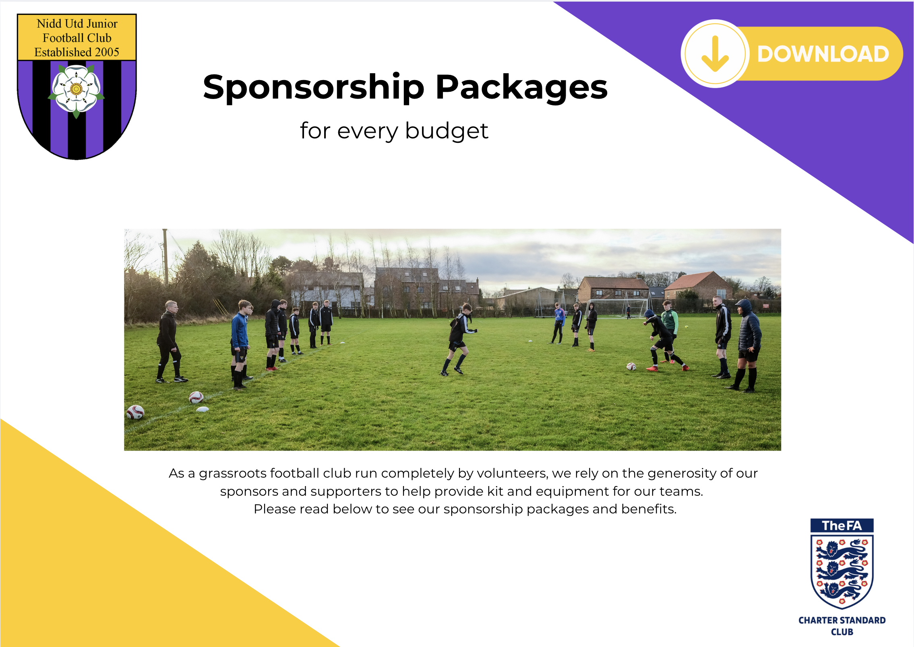

Sponsor the Club
Our Club cost over £20,000 per year to run and we could not affordably function without the fantastic support and contributions from our generous sponsors. Private sponsorship is a major source of funding, and we achieve so much more as a Club thanks to the generosity of local businesses and individuals willing to invest in us. 
While some of the sponsorship directly reduces the cost of match shirts for parents, it also provides essential funding to support the day-to-day running of the club and improve the football experience for all players.
Here are some examples of how your sponsorship could enable the club to continue to provide a great football experience for all our players and their families:
£30 – Covers the first aid training cost for one coach.
£40 – Covers the referee fee for one team for one match.
£100 – Pays for a set of match balls for two teams for the season.
£200 – Helps the club cover a player's membership and kit costs under our Player Support Fund, ensuring that where the costs of joining the club would otherwise prevent a child playing football, they can still take part.
£500 – Pays for around half of the 32 weeks of 3G mid week winter training for one of our teams.
£1,000 – Covers the cost of one match pitch ground hire for a year.
£1,500 – Helps fund essential equipment, like half the cost of a new set of goals.
Every sponsor helps us go further — keeping grassroots football affordable and sustainable for all families at Nidd United.
Download our Sponsorship Pack to learn more about the options available.
Make a One-Off Donation
If you're not able to sponsor the club through one of the packages above but would still like to support what we do, you can give any amount via our secure online giving portal:
https://lovegiving.co.uk/nidd-utd/nidd-utd-jfc
All funds donated will be used to help deliver the objectives of Nidd United JFC.
For more information on how we use the sponsorship funds, please see our Sponsor and Match Kit Policy
At Nidd United, we’re proud of the positive and inclusive environment we foster for our players and families. We only accept sponsorship from individuals and organisations whose values align with those of the club. We reserve the right to decline sponsorship offers from businesses or brands that we feel are not appropriate for a youth sports setting or that conflict with the ethos of grassroots football.